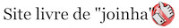

AsKemata |
|
Os "exercícios" aqui presentes reúnem links, citações, traduções e outros materiais sobre os temas: História da Filosofia, História das Ciências, História das Ciências Humanas e História da Psicologia.
O espaço é inteiramente "artesanal" e feito em Markdown, uma linguagem bastante simples. A idéia é envolver instrumentos open source com formato de fácil trânsito em qualquer mídia. O espaço também dispõe de citações e um blog. Cultivamos também referências sobre Linux para pesquisadores de ciências humanas.
Também aqui: alguns textos publicados, bem como minhas páginas PhilPapers, ORCID, Academia e meu blog Philosopher’s Desk. Contatos aqui.
Posts in Português [PT], Français [FR], Español [ES] and English [EN].
Pavlov e o mal menor.
Teorias e Sistemas em Psicologia (Behaviorismo e Gestalt). Fundamentos Históricos, Filosóficos e Epistemológicos da Psicologia.
“A visão de mundo mais perigosa é a visão de mundo daqueles que nunca viram o mundo”. - Humboldt -
